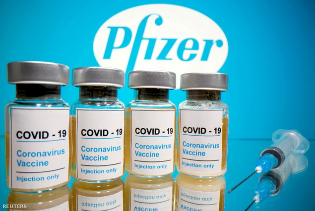
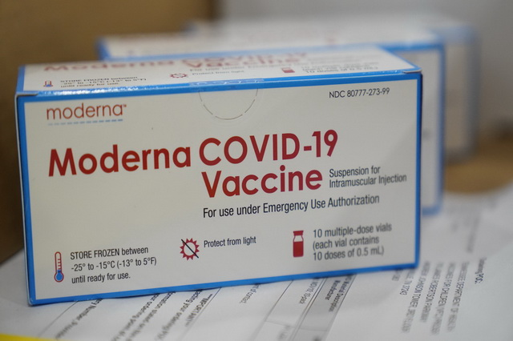
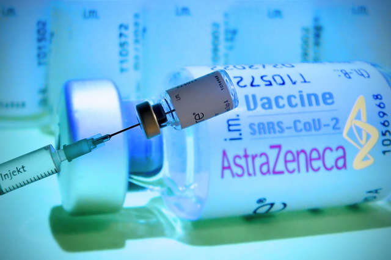
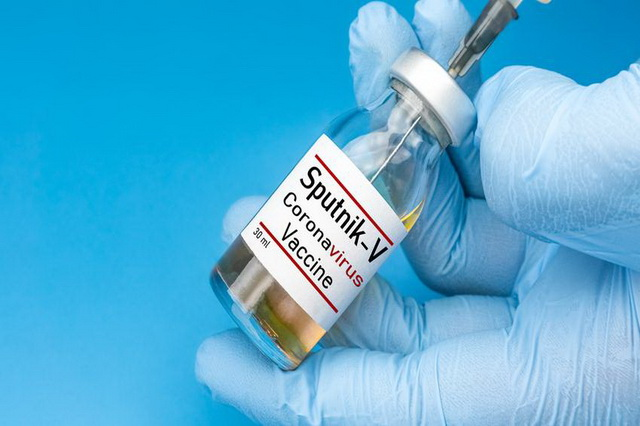
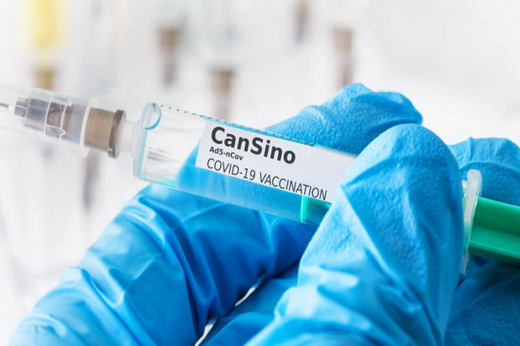
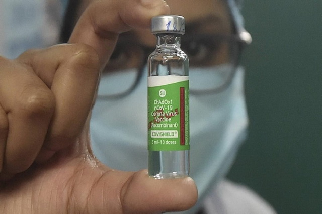

Magyarországon elérhető vakcinák:

Pfizer/BioNTech vakcina
A Pfizer és a BionTech közös fejlesztésű, Comirnaty elnevezésű vakcinája volt az első, amely
engedélyt kapott egy nyugati országban, elsőként az Egyesült Államokban.
Az amerikai gyógyszergyártó és a német biotechnológiai cég oltóanyaga az egyik új technológián
alapuló harmadik generációs vakcina, úgynevezett mRNS-vakcina.
A technológiai úgy működik, hogy az mRNS-vakcinát lipid nanorészecskékkel juttatja be a szervezetbe
az oltás, ami a bevitelt követően a vírus tüskefehérjéjét készítteti el a sejtjeinkkel,
így alakítva ki az immunitást...(forrás:portfolio.hu)

Moderna vakcina
A második nyugati vakcina, amely az Egyesült Államokban, majd Európában engedélyt kapott, az amerikai
Moderna vakcinája volt.
A Pfizer vakcinájához hasonlóan a Moderna oltóanyaga is egy mRNS-vakcina. Az mRNA-1273 névre
hallgató vakcina készítményt több mint 30 ezer emberen tesztelték.
A vakcina két dózisú, melyet 28 nap eltéréssel szükséges beadni és a lezajlott fázis 3 klinikai
teszt eredményei alapján, a teljes vizsgált populációra nézve 94 százalékos védelmet nyújtott
covid-megbetegedés ellen.
A súlyos megbetegedés ellen 100 százalékban védelmet nyújtott.(forrás:portfolio.hu)

AstraZeneca/Oxford vakcina
Az AstraZeneca és az Oxford Egyetem által közösen fejlesztett brit vakcina szintén a modern
vakcinatechnológiák egyik képviselője, de nem mRNS-vakcina, hanem úgynevezett vektorvakcina.
A technológia lényege, hogy egy módosított, sokszorozódásra nem képes vírusba (ez esetben egy
csimpánz adenovírusba) ütetve juttatják be a koronavírus tüskefehérjéjét kódoló gént. Az
immunrendszerünk a koronavírus
tüskefehérjéjét kódoló gént bejuttató vírus (vektor) ellen is fellép, és kialakít
védelmet.(forrás:portfolio.hu)

Szputnyik V vakcina
A Szputnyik V vakcina az első orosz koronavírus-vakcina, amellyel Oroszországban már augusztus óta
oltják a frontvonalbeli dolgozókat, eddig mintegy 800 ezer főt a Bloomberg adatai szerint.
A Szputnyik V vakcina szintén egy modern technológián alapuló vektorvakcina. Az orosz Gamaleya
Intézet (Gamaleya National Center of Epidemiology and Microbiology) fejlesztette,
a vakcina két dózisában két különböző humán adenovírus-vektort alkalmaznak (Ad5 és Ad26). Mivel a
vektorvakcinák hatékonyságánál fontos, hogy egy olyan vírus legyen a vektor, amellyel nagy
valószínűséggel még nem
találkozott a beoltott személy, különben nem hatásos a vakcina, így a kétféle vírus alkalmazásával
mennek biztosra.(forrás:portfolio.hu)
Sinopharm vakcina
A kínai vakcinafejlesztések közül kettő jár az élen, amelyeket már Kínán kívül is elkezdtek tesztelni
és alkalmazni, az egyik a Sinopharm készítménye.
A kínai állami Sinopharm két vakcinát is fejleszt, mind a kettő inaktivált vírust alkalmazó
„hagyományos” technológia. A vállalat december végén közölte, hogy a fázis 3 tesztek során 79
százalékos
hatékonyságot mértek, míg az Egyesült Arab Emirátusokban, ahol 31 ezer főn tesztelték, 86 százalékos
hatékonyságról számoltak be és súlyos mellékhatásokat nem jegyeztek fel. A vakcinával már hónapokkal
ezelőtt
megindult az oltás Kínában, eddig közel 1 millió fő kapta meg. Kínán kívül az Egyesült Arab
Emírségek, Bahrein, Egyiptom, Irak, Jordánia, a Seychelle-szigetek és Pakisztán engedélyezte a
Sinopharm vakcináját.(forrás:portfolio.hu)

CanSino vakcina
Egyadagos, nem igényel mélyhűtőt a CanSino kínai vakcina. A második, Magyarországon engedélyezett
kínai oltás Convidecia márkanéven kerül forgalomba.
A vakcinát eddig – Magyarországon kívül - Kínában, Pakisztánban és Mexikóban engedélyezték. Ez
egyben azt is jelenti, hogy a Sinopharm vakcinája után ez a második kínai Covid-19 elleni oltóanyag,
amely zöld utat kap Magyarországon.
A vakcinát fejlesztő céggel kapcsolatos érdekesség, hogy a védőoltást a Pekingi Biotechnológiai
Intézettel és a Katonai Orvosi Tudományok Akadémiájával közösen fejlesztették. A CanSinoBIO volt a
világon az első Covid-19 elleni vakcinát
fejlesztő cég, ami humán klinikai vizsgálatokat kezdett 2020 márciusában.(forrás:egeszsegkalauz.hu)

CoviShield vakcina
A Covishield az Oxford-AstraZeneca által kifejlesztett vakcinának a világ legnagyobb
oltóanyaggyártója, a ’Serum Institute of India’ elnevezésű indiai vállalat által helyben gyártott
változata. Állításuk szerint havonta több mint 50 millió vakcinadózist állítanak elő.
A vakcina egy csimpánzoktól származó, közönséges megfázást okozó vírus (közismert nevén egy
adenovírus) legyengített változatából készül, melyet úgy módosítottak, hogy jobban hasonlítson a
koronavírusra - ugyanakkor nem okozhat betegséget.
Amikor a vakcinát beadják valakinek, az arra készteti az immunrendszert, hogy antitesteket kezdjen
termelni, és felkészíti a szervezetet a koronavírus-fertőzés elleni támadásra.
A vakcina két dózisban kerül beadásra, 4-12 hét különbséggel. Biztonságosan tárolható 2 °C és 8 °C
közötti hőmérsékleten...(forrás:webbeteg.hu)
Most pénteken...
Dr. Adamecz Imre háziorvos rendelőjében, délelőtt 10 órakor, Rékási László megkapja az első adag
vakcináját, ami előre láthatólag az AstraZeneca vakcinája lesz.
Mostanság sokat hallani a mellékhatásairól, dehát minek nincs ma mellékhatása?!... "Csak amiatt
szerettem volna másik fajta oltást, hogy ne kelljen 3 hónapot várni a második adagra. Viszont ha
most ez jutott, akkor nem válogatok, beoltatom magam..." - nyilatkozott
honlapunknak Rékási László // FRISS: Bizonyára sokan hallották, hogy továbbra is kételyek merültek
fel az AstraZeneca-vakcinával kapcsolatban – emelte ki Müller Cecília, utalva az EMA
tisztviselőjének megszólalására, majd arra, hogy az EMA még aznap közölte, hogy a
vizsgálatok még nem értek véget. Az országos tiszti főorvos kiemelte, amint megfogalmazzák a
hivatalos állásfoglalást – ezt ma délutánra vagy legkésőbb csütörtök reggelre becsülte –, attól
függően döntenek a további hazai alkalmazásról...